10 部片单 · 恐怖 / 科幻 / 惊悚 / 悬疑 / 剧情
| # | 片名 | 类型 | 评分 / 状态 |
|---|---|---|---|
| 01 | 死神来了 | 恐怖 / 惊悚 / 悬疑（死神设计） | 7.9 / 35% / 6.7 |
| 02 | 女巫布莱尔 | 恐怖 / 伪纪录 / 心理（拾得影像） | 6.4 / 86% / 80 |
| 03 | 网络谜踪 | 悬疑 / 惊悚 / 剧情（桌面电影） | 8.5 / 92% / 71 |
| 04 | 迷雾 | 科幻 / 恐怖 / 惊悚（斯蒂芬·金） | 8.0 / 74% / 7.1 |
| 05 | 1408幻影凶间 | 恐怖 / 悬疑 / 心理（斯蒂芬·金） | 7.5 / 80% / 64 |
| 06 | 危情十日 | 惊悚 / 剧情 / 心理（斯蒂芬·金） | 8.4 / 86% / 75 |
| 07 | 本能 | 惊悚 / 悬疑 / 心理（新黑色） | 7.9 / 55% / 43 |
| 08 | 大逃杀 | 惊悚 / 剧情 / 反乌托邦（日本） | 8.0 / 88% / 7.5 |
| 09 | 攻壳机动队 | 科幻 / 惊悚 / 动画（赛博朋克） | 9.0 / 95% / 76 |
| 10 | 黑洞表面 | 科幻 / 恐怖 / 悬疑（太空邪典） | 7.0 / 36% / 35 |
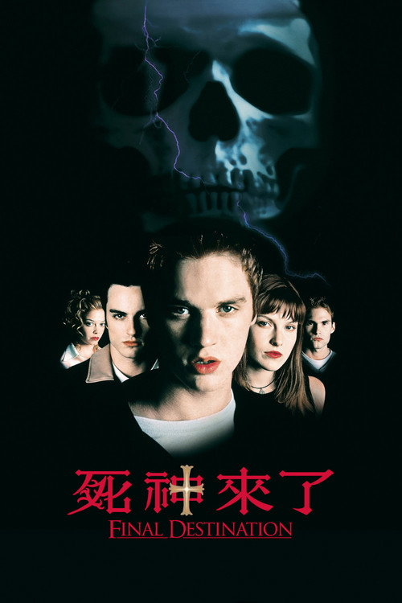
死神来了 Final Destination
他预见到飞机爆炸，救下六个人。死神只是把账单重新排了队。
剧情梗概
高中生艾利克斯和法语课同学登上飞往巴黎的航班。起飞前他忽然被一个清晰的预感击中：这架飞机升空后会爆炸。他慌乱大喊，混乱中和另外六人被工作人员赶下机——随后飞机真的在爬升中炸成一团火球。幸存者以为逃过一劫，但从那一刻起，他们开始按预感里的顺序一个接一个死于离奇事故。艾利克斯终于明白：死神不是被躲开了，只是顺序被改写了。
亮点
- 黄毅瑜（James Wong）执导，《X档案》编剧班底出身，把「死亡设计」拍成了连锁反应式的机械美学。
- 系列真正的开创者：本片把恐怖片的主角从「鬼 / 杀手」换成了「命运」本身，此后五部续集都沿用它定下的规则。
- 戴文·萨瓦饰演的艾利克斯，是恐怖片里少见的「越清醒越绝望」型主角——他不是被追杀，是在跟一套看不见的算法赛跑。
- 托尼·托德饰演的验尸官戏份不多，几句台词就把「死亡是有设计的」这个世界观钉死了。
- 全片没有任何可见的反派，所有恐惧来自日常物件的排列组合——这也是它比血浆片更让人后怕的原因。
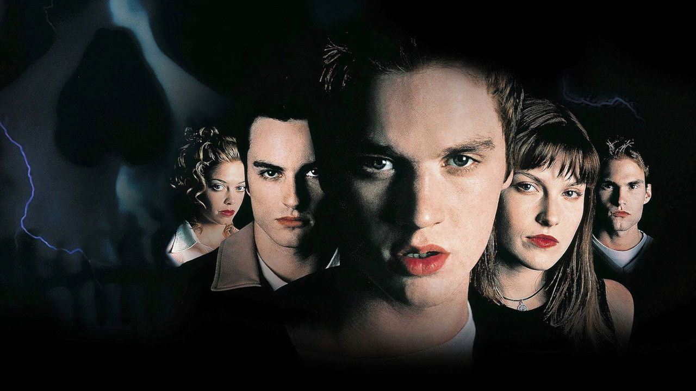
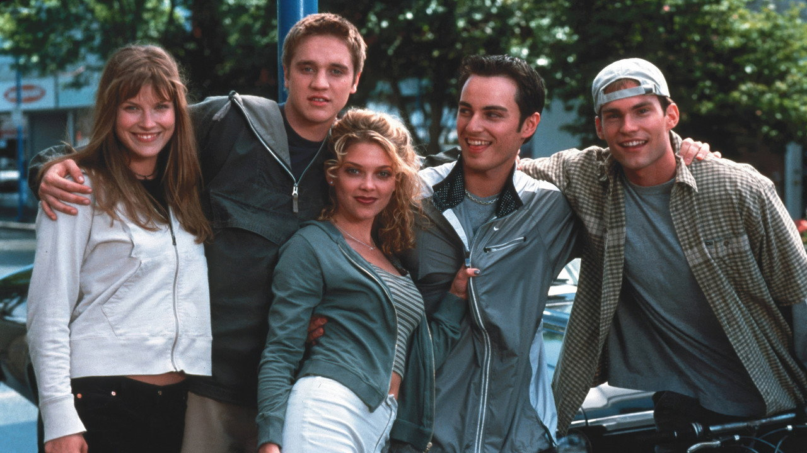
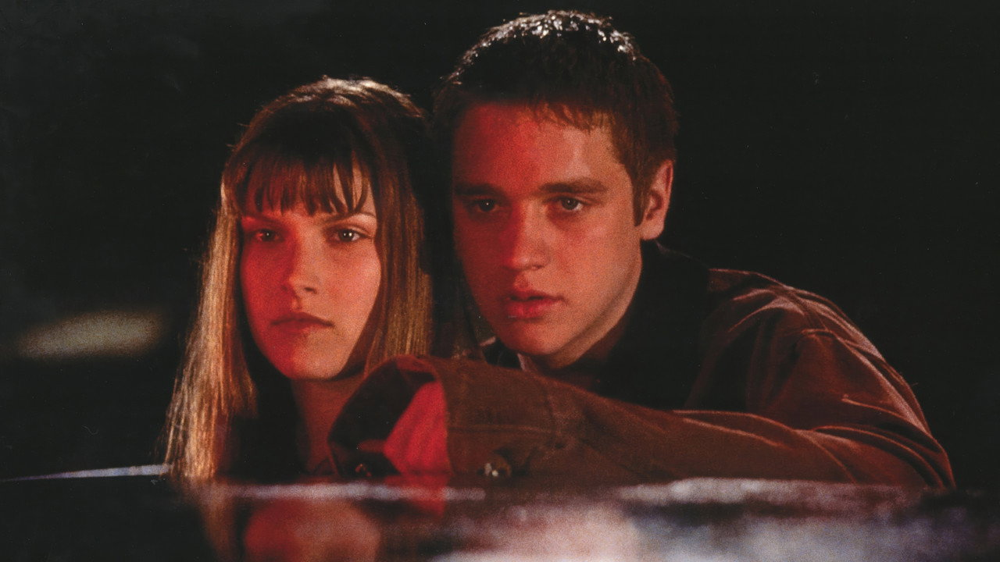
导演与主创 · 他们的历史作品
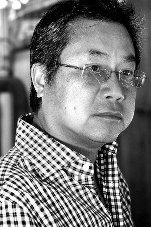
 死神来了3
死神来了3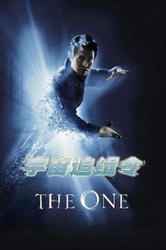
宇宙追缉令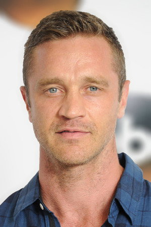
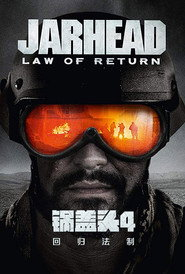
锅盖头4：回归法制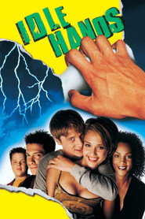
魔掌 黑色星期五
黑色星期五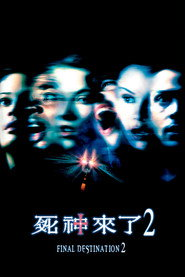
死神来了2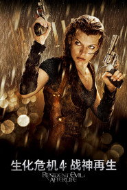
生化危机4：战神再生 生化危机3：灭绝
生化危机3：灭绝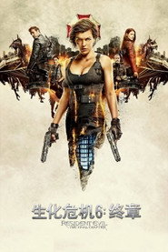
生化危机6：终章短评（轻微剧透）
《死神来了》最聪明的一笔，是它把恐怖片里的「凶手」整个删掉了。没有面具、没有鬼、没有诅咒，只有一套谁也看不见却严丝合缝的因果链——于是你真正怕的不再是某个形象，而是「意外」本身：浴缸边的电线、漏水的杯子、路上飞来的木板，全都变成了倒计时。黄毅瑜的调度像在做一场精密的多米诺实验，每一次死亡都由五六件日常物件接力完成，看完你会忍不住回头检查自家厨房。缺点要说清楚：剧本重心全在「怎么死」，人物几乎是工具，这也是烂番茄只有 35% 的原因——影评人嫌它没深度；但豆瓣 7.9、全球 1.86 亿美元票房说明它精准击中了观众对「日常失控」的原始恐惧。它真正厉害的不是吓人，是让你看什么都像凶器。轻微剧透：艾利克斯以为自己在跟顺序赛跑，可死神的厉害之处恰恰在于——你每躲一次，它就重新设计一次。
为什么值得一看
喜欢《惊声尖叫》《林中小屋》《死神来了：血脉诅咒》这类「规则型恐怖」的观众；对「日常场景被异化」有感觉、能接受连锁意外式惊吓的人。含写实死亡场面（R 级），敏感者慎入。内地未引进，流媒体可看。
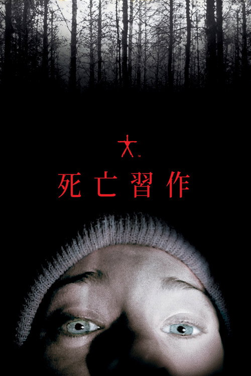
女巫布莱尔 The Blair Witch Project
三个学生进了马里兰的森林拍纪录片。一年后，只找到了他们的录像带。
剧情梗概
1994 年 10 月，三名电影学院学生带着摄像机前往马里兰伯基茨维尔，想拍一部关于当地「布莱尔女巫」传说的纪录片。他们采访村民、收集线索，然后走进黑山森林——然后迷路。地图被扔掉，白天和黑夜开始没有区别，夜里陆续出现柴火堆、石堆和成捆的树枝人偶。摄像机一直转着，直到最后一段漆黑中的奔跑。
亮点
- 丹尼尔·米里克与艾德亚多·桑切斯联合编导，约 6 万美元成本换来全球 2.49 亿美元票房，是影史上投入产出比最高的电影之一。
- 它定义了「拾得影像」（found footage）这个亚类型，此后《鬼影实录》《死亡录像》《科洛弗档案》都直接站在它肩上。
- 全片没有出现任何怪物、鬼影或特效——恐怖完全来自「不给你看」。
- 1999 年圣丹斯午夜场首映引爆口碑，Artisan 以 110 万美元买下发行权；片方用「这些人真的失踪了」的网站做病毒营销，开创了新宣发范式。
- 演员使用真实姓名，台词大量即兴，实拍仅 8 天、素材近 20 小时，最终剪成 82 分钟。
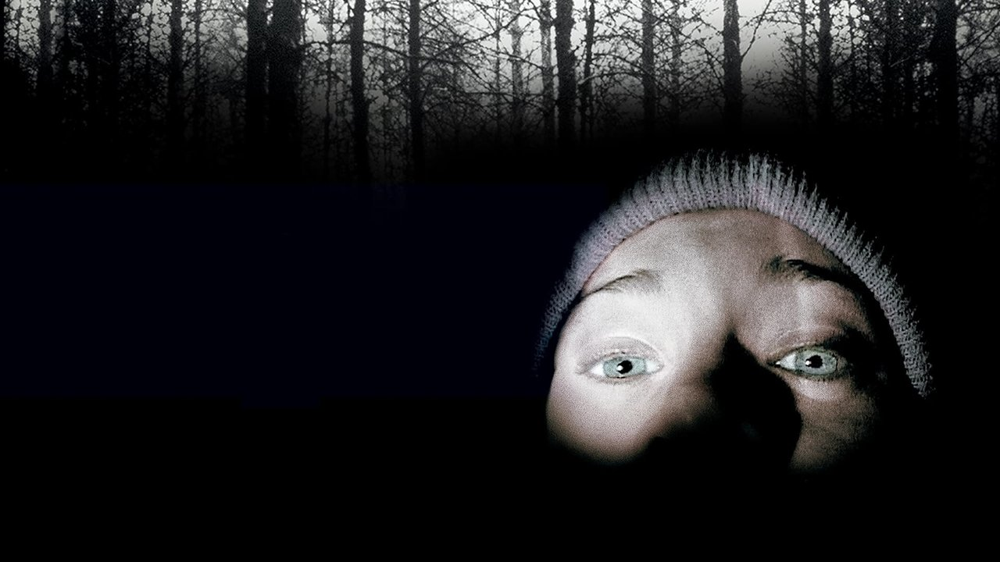
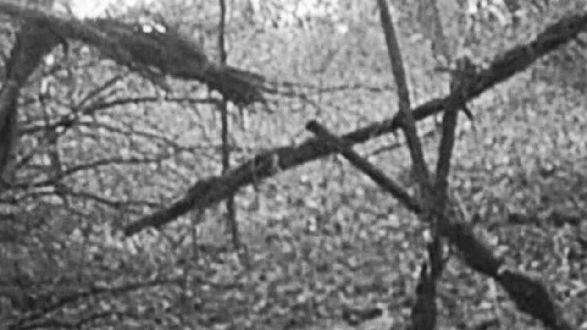
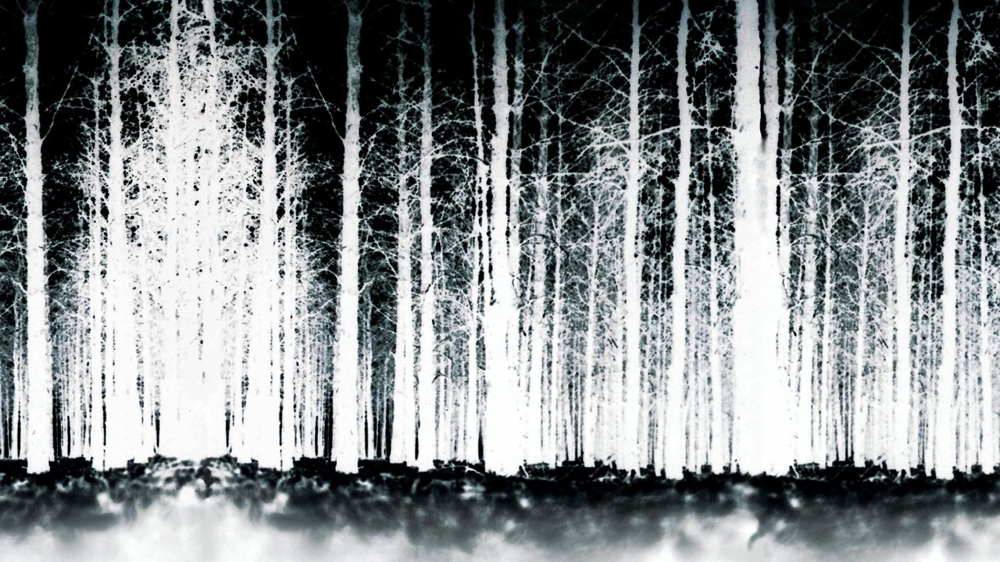
导演与主创 · 他们的历史作品
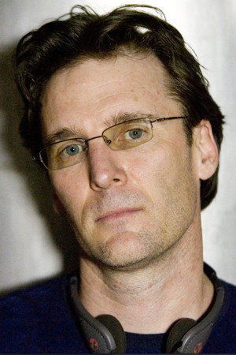
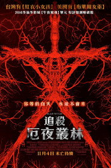
布莱尔女巫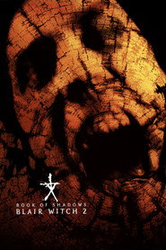
女巫布莱尔2：影子之书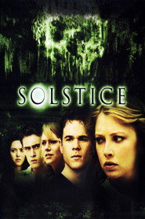
极端行为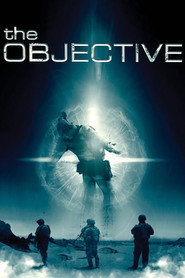
血战沙漠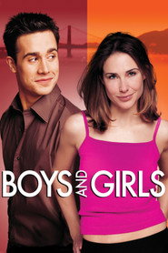
挡不住的爱妹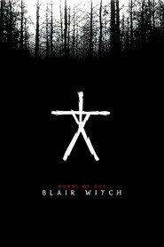
Curse of the Blair Witch短评（轻微剧透）
《女巫布莱尔》是一次把「没钱」变成「恐怖武器」的教科书。它什么都没给你看——没有女巫、没有血、没有一个镜头交代发生了什么，只有一台越握越不稳的摄像机和三个越来越崩溃的人。可正因为不给看，你的想象力会被迫上岗，而你自己想出来的东西永远比银幕上的更可怕。它真正高明的是恐怖的落点不是死亡，是「迷路」：地图丢了、方向没了、白天和黑夜失去区别，那种缓慢的失控比任何 Jump scare 都折磨人。缺点必须诚实：晃动的手持镜头让不少观众生理不适（当年影院真有人吐），CinemaScore 只有 C+，豆瓣 6.4 也说明国内观众对它两极分化严重——有人觉得无聊，有人觉得是神作。这不是它的瑕疵，是它的筛子：它只对愿意把自己放进森林里的人有效。轻微剧透：最后那段全黑中的奔跑之所以恐怖，是因为摄像机终于放下了——你只剩下声音。
为什么值得一看
喜欢《鬼影实录》《死亡录像》《昆池岩》这类伪纪录恐怖的观众；想理解「低成本恐怖为什么反而最吓人」的人。含写实惊吓与粗口（R 级），晕动症患者慎看。内地未引进。
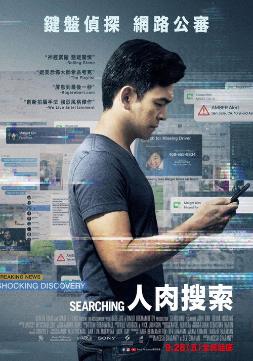
网络谜踪 Searching
女儿失踪了。他打开她的笔记本电脑，才发现自己从没真正认识过她。
剧情梗概
加州工程师大卫·金的 16 岁女儿玛戈特某天夜里出门后没有再回来。报警后，负责此案的警探初步判定为离家出走；大卫不信，于是坐到女儿的电脑前，从她的社交账号、聊天记录、直播平台和支付记录里一层层往下挖。屏幕上的窗口越开越多，一个「乖女儿」的形象开始崩塌，而真正的危险也沿着线索一点点逼近。
亮点
- 阿尼什·查甘蒂的长片处女作，2018 年圣丹斯拿下「下一代观众奖」与「阿尔弗雷德·P·斯隆长片奖」，索尼以 500 万美元买下发行权。
- 全片几乎完全在电脑 / 手机 / 监控屏幕上完成，是「桌面电影」（Screenlife）这一形式最成功的代表作。
- 制作成本仅约 88 万美元，全球票房 7546 万美元；实拍只有 13 天，后期剪辑却花了两年多，单帧图层一度超过 30 层。
- 约翰·赵（《星际迷航》《全面回忆》）挑大梁，几乎全片靠面部微表情与打字节奏演戏。
- 它不只是形式噱头——「如何在网上拼凑一个人」本身就是这个故事的核心动作。
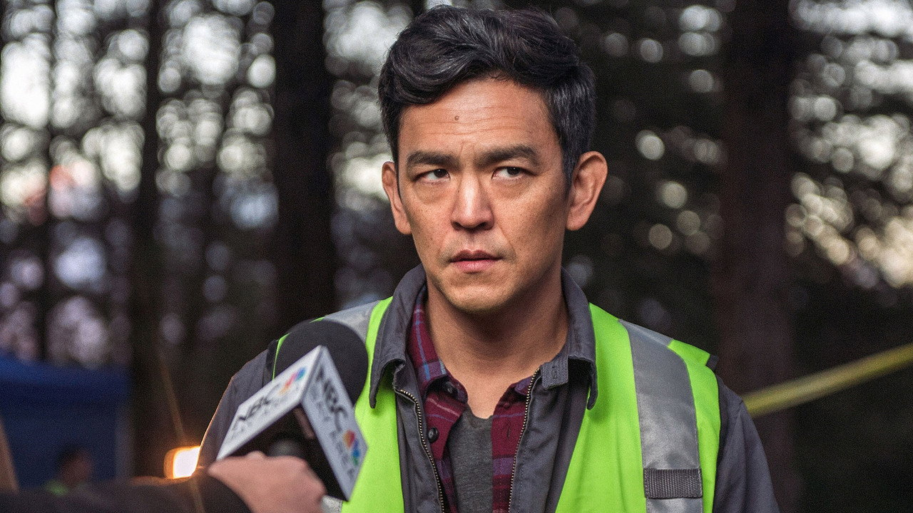
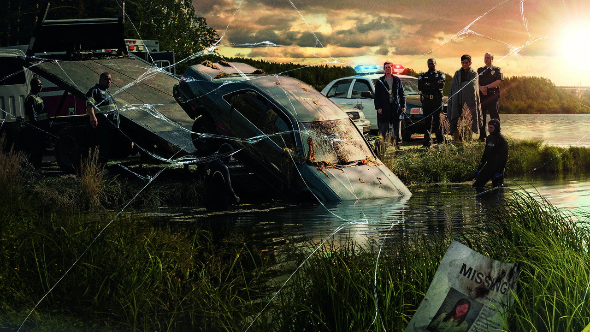
导演与主创 · 他们的历史作品
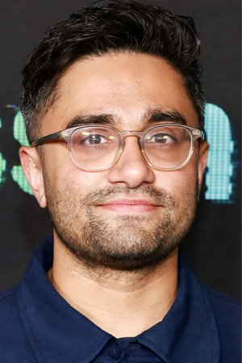
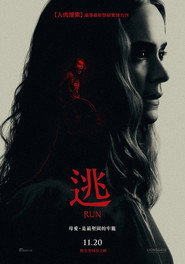
逃跑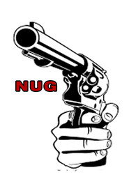
Nug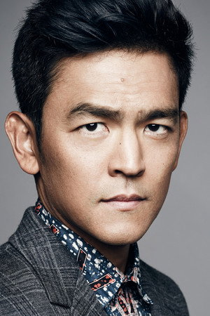
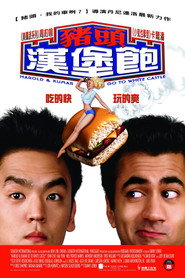
猪头逛大街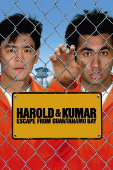
猪头逛大街2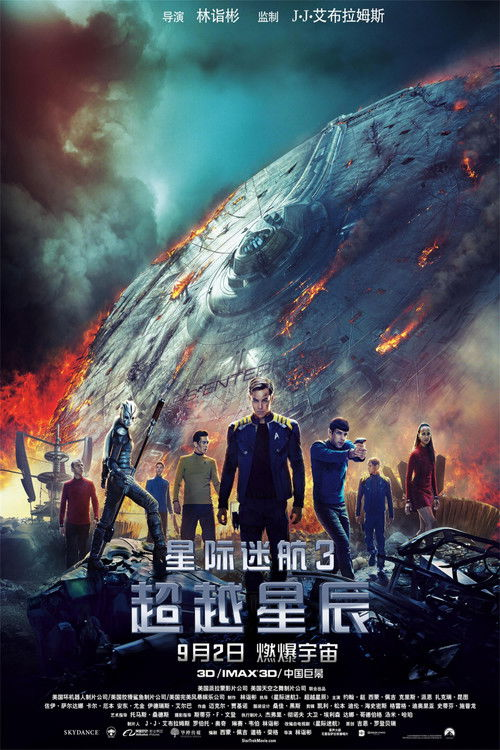
星际迷航3：超越星辰 全面回忆
全面回忆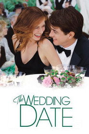
结婚纪念日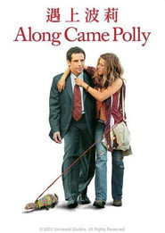
遇见波莉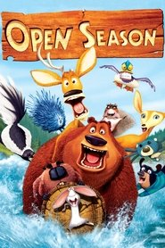
丛林大反攻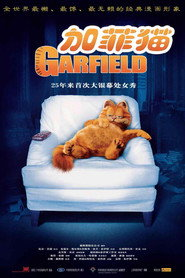
加菲猫短评（轻微剧透）
《网络谜踪》最了不起的地方，是它把「形式」拍成了「内容」。桌面电影这个点子听上去像噱头，但当你意识到——一个父亲了解女儿的唯一途径，就是翻她的浏览器历史和私信——这个形式就变成了叙事本身：我们本来就是这样认识彼此的，通过屏幕，通过碎片，通过对方愿意展示的那部分。查甘蒂把悬疑做得相当扎实，每一层线索既推动案情又改变你对人物的判断，中途几次反转不靠巧合，靠的是「你以为你看到的就是全部」这个偏见。约翰·赵的表演被严重低估：他大部分时间只是对着镜头打字，可鼠标停顿的那半秒、删掉又重打的那句话，全是戏。缺点也要说：最后一幕的收束略显主流、温情化了些；Metacritic 71 也说明影评人觉得它深度有限。但作为一部 102 分钟不让你看手机的悬疑片，它做到了绝大多数大片做不到的事。轻微剧透：真正被救回来的不是女儿，是父亲对「我了解她」这件事的幻觉。
为什么值得一看
喜欢《看不见的客人》《利刃出鞘》《调音师》这类「层层反转」悬疑的观众；对网络时代的亲子关系、隐私与身份有共鸣的人。基本无血腥（PG-13 级别惊悚），适合多数观众。内地 2018 年 12 月曾公映，流媒体可看。
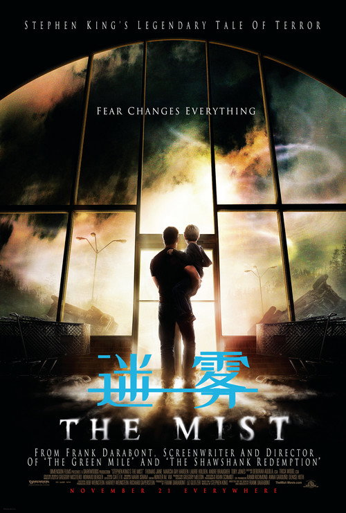
迷雾 The Mist
浓雾来了，超市成了孤岛。真正吃人的，不只在雾里。
剧情梗概
缅因州小镇遭遇暴风雨，画家大卫带着儿子和邻居去镇上超市采购。一团浓得化不开的白雾从山后压下来，很快吞掉整个停车场——雾里有东西。被困的几十个人把超市封死，在货架之间划分阵营：有人要冲出去，有人要等待，而卡莫迪夫人开始用《启示录》解释一切，并迅速聚拢起信徒。三天里，罐头没少多少，人却一个接一个没了。
亮点
- 弗兰克·德拉邦特（《肖申克的救赎》《绿里奇迹》）第三次改编斯蒂芬·金，这次从监狱剧转向彻底的恐怖。
- 马西娅·盖伊·哈登饰演的卡莫迪夫人是全片真正的恐怖来源——她没有任何超能力，只有说服人的本事。
- 托马斯·简把「理性父亲」一步步被逼成「决定谁该死的人」的过程演得极有说服力。
- 影片把「超市」当成一个微型社会：恐惧一旦有了领袖，暴力就自动获得了合法性。
- 结局与金的原著完全不同——原著留下一丝微光，电影直接把灯关掉了。金本人也认为电影版更狠。
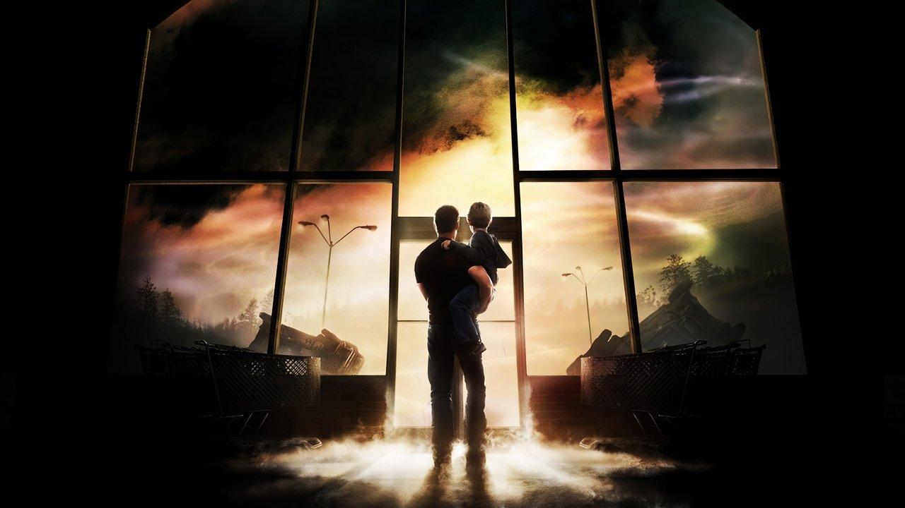
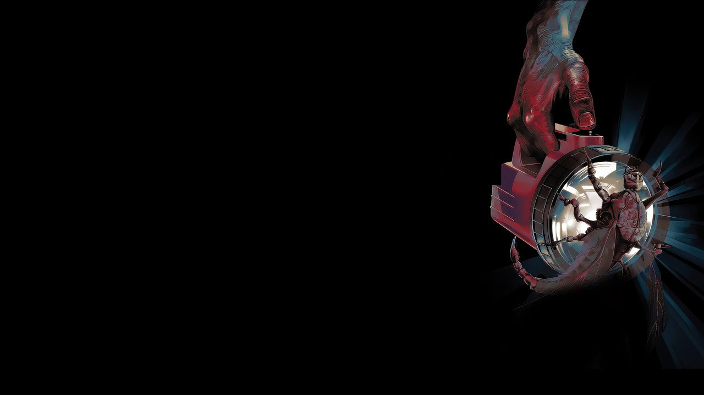
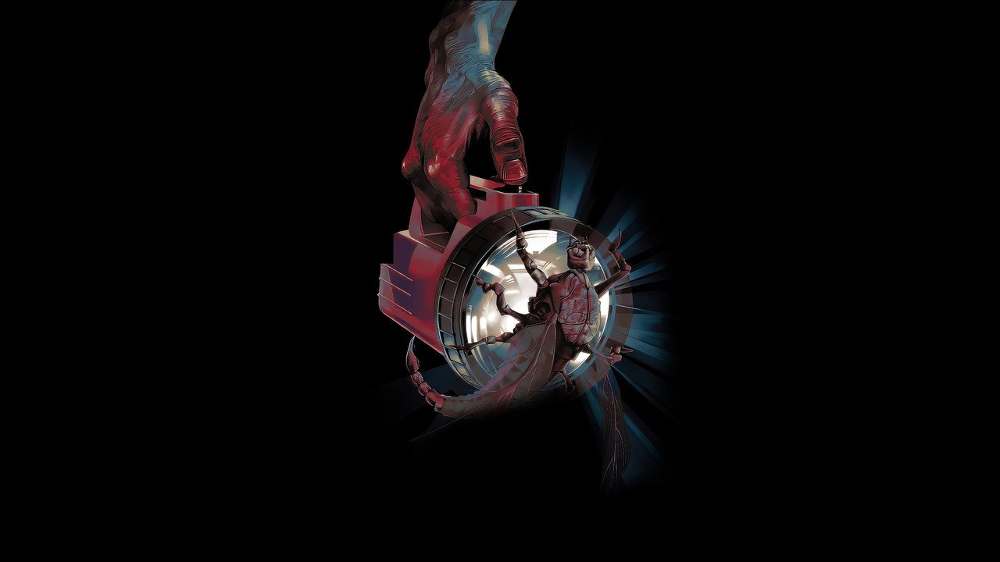
导演与主创 · 他们的历史作品
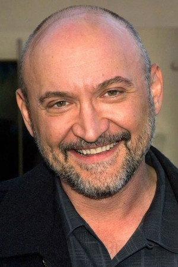
 肖申克的救赎
肖申克的救赎 绿里奇迹
绿里奇迹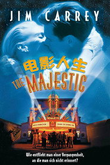
电影人生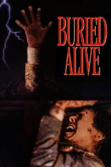
生人活埋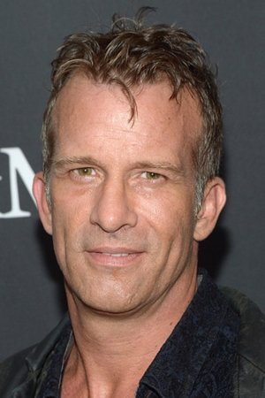
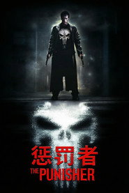
惩罚者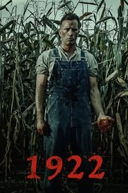
1922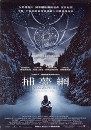
捕梦网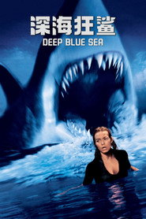
深海狂鲨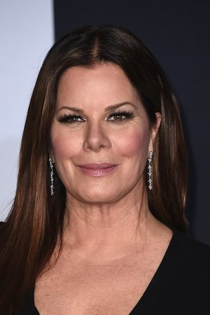
 荒野生存
荒野生存 五十度灰
五十度灰短评（轻微剧透）
《迷雾》有两层恐怖，而第二层比第一层狠得多。第一层是雾里的怪物——触手、巨虫、翼手龙，做得不算精致但足够恶心；第二层是超市里的人：当恐惧找不到出口，一个能把恐惧讲成「神意」的人就会立刻拥有权力，而人群会把献祭当成秩序。德拉邦特真正想拍的不是怪物袭城，是末日下社会契约崩坏的加速版——不到三天，一群体面的小镇居民就能商量着把人推出去喂怪。哈登的卡莫迪夫人是近年恐怖片里最被低估的反派，因为她一句超自然能力都没有，全靠「我替你们解释了为什么」。托马斯·简则负责让观众相信：一个好父亲真的会在那种处境下做出那个决定。缺点诚实说：CGI 放到今天偏旧，中段节奏略拖，海外口碑（烂番茄 74%）也算不上惊艳。但那个结局——轻轻剧透——是全片最残忍的一击：他们不是死在怪物手里，是死在「再撑五分钟就能获救」手里。看完你会坐在原地缓很久。
为什么值得一看
喜欢《科洛弗道10号》《林中小屋》《寂静之地》这类「密闭空间 + 群体崩溃」的观众；能接受极度压抑、结局毫不留情的心理恐怖的人。含怪物与写实暴力（R 级），心理承受力弱者慎入。内地未引进。
1408幻影凶间 1408
他写过十几本书，专门证明世上没有鬼。然后他订了 1408 房。
剧情梗概
麦克·恩斯林是专写「揭穿灵异骗局」的恐怖小说家，走遍全国住过所有著名鬼屋，一次都没遇见鬼。他收到一张匿名明信片：「别进 1408。」于是他来到纽约海豚酒店，执意要订这间据说已经死了 56 个人的房间。经理欧林亲自劝他，理由却不像是在做生意。麦克还是上去了——房门关上的那一秒，一小时零八分钟开始倒数。
亮点
- 改编自斯蒂芬·金同名短篇；而这个故事的雏形，原本只是金在《写作这回事》里示范「初稿怎么改」时写的一千多字。
- 瑞典导演米凯尔·哈佛斯特朗姆执导，把北欧式的冷感带进好莱坞恐怖片，全片几乎只用一个房间和一个演员撑住。
- 约翰·库萨克贡献了生涯最好的独角戏之一——大量时间他一个人在房间里，靠反应与独白撑满 104 分钟。
- 塞缪尔·杰克逊饰演的酒店经理只有几场戏，却把「他是真的在救人」演得让人信服。
- 恐怖不靠血浆，靠「房间在针对你」：时钟、收音机、窗外的倒影，全被改造成了心理战道具。
- 2500 万美元预算换回全球 1.33 亿票房，是当时票房最高的斯蒂芬·金改编作品之一。
导演与主创 · 他们的历史作品
 2012
2012 八恶人
八恶人 低俗小说
低俗小说 美国队长2
美国队长2 惊奇队长
惊奇队长短评（轻微剧透）
《1408》是一部被低估的密室恐怖——它只有一个房间、一个演员和一小时零八分钟，却能让你在第 20 分钟就开始坐立不安。哈佛斯特朗姆的厉害在于，他没把房间拍成「鬼屋」，而拍成了「一个会读你的东西」：房间里出现的不是随机惊吓，而是麦克自己最怕、最亏欠的东西——它知道他失去过什么，于是拿那个来喂他。这让恐怖从外部侵入变成了内部清算，也让库萨克那场几近独角戏的表演有了支点：他不是在装害怕，是在被自己审判。塞缪尔·杰克逊的经理是全片最妙的设计，他把「劝你别住」演得像在求你活命，那股真诚反而比任何诅咒都吓人。缺点也要说：中段有几处幻觉桥段略显杂耍，Metacritic 64 说明影评人觉得后半段没撑住前 40 分钟的锐度；但它仍然交出了一个相当漂亮的收尾。轻微剧透：房间真正想证明的不是「鬼存在」，而是「你根本逃不掉你自己」。
为什么值得一看
喜欢《闪灵》《科洛弗道10号》《活埋》这类「单一空间 + 心理压迫」的观众；想看约翰·库萨克独角戏的人。含心理惊吓与部分恐怖画面（PG-13），血腥度低。内地未引进，流媒体可看。
危情十日 Misery
「我是你的头号书迷。」——这句话，后来成了他最怕听见的话。
剧情梗概
畅销书作家保罗·谢尔顿在暴风雪中车祸重伤，被独居护士安妮·威尔克斯救回家中。安妮自称是他的头号书迷，悉心照料、无微不至。直到她读到了保罗新书的结尾——他让「Misery」这个陪了他多年的角色死了。安妮不接受。她烧掉原稿，买来打字机，让他在床上重写。保罗渐渐发现，这座温暖的房子，方圆几里都没有邻居。
亮点
- 改编自斯蒂芬·金同名小说；金的灵感来自书迷的抱怨——「你为什么不写早期的恐怖题材了」。
- 凯西·贝茨凭安妮一角拿下第 63 届奥斯卡最佳女主角与金球奖剧情类影后，是极少数靠惊悚片封后的表演。
- 全片本质是两个人一间屋的室内剧，几乎全靠表演与台词张力撑满 107 分钟。
- 罗伯·莱纳（《伴我同行》《当哈利遇到莎莉》《怦然心动》）证明自己不只擅长温情，也擅长把温情一层层剥掉。
- 詹姆斯·凯恩（《教父》桑尼）大部分时间困在床上，全靠眼神与呼吸演「被囚禁」。
- 剧本由威廉·高德曼（《虎豹小霸王》《总统班底》）操刀，对白锋利、结构极稳。
导演与主创 · 他们的历史作品
 公主新娘
公主新娘 好人寥寥
好人寥寥 教父
教父 泰坦尼克号
泰坦尼克号短评（轻微剧透）
《危情十日》最恐怖的地方，是它开场半小时几乎是一部温情片——雪夜、车祸、被救、热汤、一个有点啰嗦但真心崇拜你的中年女人。安妮的每一次体贴都是真的，这正是它令人发毛之处：她不是骗子，她确实爱保罗，只是她的「爱」里包含了完整的处置权。凯西·贝茨的表演是影史级的：她没有把安妮演成疯子，而是演成一个逻辑自洽、情绪真实的人——她的暴怒来自「你背叛了我」，语气里全是委屈，这才是真正的寒意。那场用木槌砸脚踝的戏之所以让人腿软，不在于血，在于她砸之前还在讲一个关于「惩罚」的故事，语气平静得像在解释规则。詹姆斯·凯恩在床上的 107 分钟里完成了一次极难的表演：一个逐渐失去身体控制权的人，如何用手边仅剩的东西重建一点点主动。缺点几乎没有，非要挑的话，收尾的搏斗略带类型片的爽感、与前面的克制稍有出入。轻微剧透：片尾那个回头的眼神告诉你——逃出来的是身体，不是人。
为什么值得一看
喜欢《闪灵》《活埋》《吾栖之肤》这类「密闭空间 + 心理控制」的观众；对创作者与读者（偶像与粉丝）关系有兴趣的人。含写实暴力与惊悚场面（R 级），但血腥度控制得当。内地未引进，流媒体可看。
本能 Basic Instinct
她的小说里写了一场谋杀。三天后，那场谋杀真的发生了。
剧情梗概
旧金山，过气摇滚明星强尼在自家床上被白丝巾绑住双手、用冰锥刺死。警探尼克·柯兰接手调查，最大嫌疑人是死者的女友、犯罪小说家凯瑟琳·特拉梅尔——她刚出版的小说里，详尽描写了一模一样的作案过程。凯瑟琳坦然配合测谎、顺利通过，反手把尼克的黑历史抖了个干净。尼克一边被她吸引，一边发现自己身边的人，开始按照她小说的顺序死去。
亮点
- 保罗·范霍文（《机械战警》《全面回忆》《星河战队》）把欧洲的冷感与好莱坞的尺度结合，做出了 90 年代最著名的情欲惊悚片。
- 莎朗·斯通凭凯瑟琳一角一夜成名，那场审讯室的戏至今仍是影史最具争议、也最被反复讨论的段落之一。
- 迈克尔·道格拉斯饰演的尼克是个有污点、有毒瘾史的警探——他不是英雄，是被猎的那一个。
- 杰里·戈德史密斯（《异形》《唐人街》）的配乐冷冽、缠绕，是全片气质的骨架。
- 全球票房 3.53 亿美元，位列 1992 年度第四，并获得两项奥斯卡提名。
- 影片当年引发巨大争议（尤其对同性恋角色的处理），也因此成了 90 年代流行文化绕不开的符号。
导演与主创 · 他们的历史作品
 城市英雄
城市英雄短评（轻微剧透）
《本能》被讨论得最多的从来是尺度，可它真正厉害的是「谁在写谁」。凯瑟琳是小说家，而尼克是她笔下的素材——她提前把谋杀写进书里，然后看着警察照着演，这种「作者与角色」的权力倒置，才是全片最锋利的地方。范霍文从不掩饰他对类型片规则的玩弄：希区柯克的悬疑外壳、黑色电影的道德灰度，加上他一贯的冷暴力，混成一杯让人坐立难安的酒。斯通的表演是全片的引力中心——她不靠妩媚，靠的是那种「我永远比你多想三步」的从容，让尼克（以及观众）始终处于下风。缺点要诚实：剧本有几处逻辑经不起细想，烂番茄仅 55%、Metacritic 43，说明影评人的评价远不如票房；再加上当年的争议在今天看确实存在问题，这些都不该被略过。但作为一部研究「凝视与反凝视」的样本，它依然是教科书级。轻微剧透：最后一个镜头才是真正的杀招——它不告诉你谁赢了，只告诉你游戏还会继续。
为什么值得一看
喜欢《消失的爱人》《穆赫兰道》《吾栖之肤》这类「欲望与操控交织」的惊悚观众；对 90 年代新黑色电影有兴趣的人。含大量成人内容与写实暴力（R 级，另有未分级导演剪辑版），务必按自身接受度选择。内地未引进。
大逃杀 Battle Royale
一个班 42 人，三天，只能活一个。而老师还是那个老师。
剧情梗概
经济崩坏、失业率突破 15%、学生拒学与袭师成灾的日本，出台了一部《新世纪教育改革法》——通称 BR 法：每年随机抽一个初三班级，送到荒岛，发地图、粮食和随机武器，让他们自相残杀，三天内只剩一人者胜。颈环会爆炸，规则由成年人在广播里用轻松的语气念出。三年级 B 班的 42 个学生，就这样被推上了岛。
亮点
- 深作欣二执导（时年 70 岁），以《无仁义之战》系列闻名的老派黑帮片巨匠，把暴烈与悲悯同时压进了这部青春片。
- 改编自高见广春同名小说，上映时在日本引发国会质询与巨大争议，被列为 PG-12，却成为年度现象级作品。
- 北野武饰演的教师北野是全片最独特的存在——他既是规则的执行者，又是唯一还把学生当人看的人。
- 藤原龙也（时年 18 岁）饰演七原秋也，后来凭《死亡笔记》的夜神月再度走红。
- 影片几乎是「大逃杀」这个游戏类型的影像源头，从《饥饿游戏》到《鱿鱼游戏》都活在它的影子里。
- 获第 24 届日本电影学院奖最佳剪辑与最具话题影片、第 43 届蓝丝带最佳影片；《电影旬报》2000 年代本土十佳第 10。
导演与主创 · 他们的历史作品
短评（轻微剧透）
《大逃杀》常被当成「青少年互砍」的猎奇片，那是把它看小了。深作欣二真正拍的，是成年人如何把恐惧转嫁给孩子：BR 法出台的前提是「年轻人失控了」，于是成年社会用一场合法屠杀来确认自己还握着权力——这是全片最冷的地方，广播里那个轻快的女声越是温柔，规则就越是残忍。北野武的角色是深作最妙的安排：他一会儿在黑板上写「今天你们要互相残杀」，一会儿又提醒他们「逃吧」，这种自相矛盾恰好说明他也是被这套系统困住的人。影片暴力程度确实高，但它的暴力从不带快感——每次死亡都有重量，都有名字和时间戳，你会被反复提醒「这原本是一群会写作业、会暗恋、会告白的孩子」。缺点要讲：部分人物因篇幅所限沦为符号，几段死亡处理得稍显仓促；导演剪辑版（122 分钟）在情感线上更完整，建议优先看这一版。轻微剧透：最后活下来的两个人，不是因为最强，而是因为始终没学会按下那个键。
为什么值得一看
喜欢《饥饿游戏》《鱿鱼游戏》《寄生虫》这类「制度性暴力」题材的观众；能接受高强度暴力与青春残酷叙事的人。含大量写实暴力与血腥（原版 PG-12，实质接近 R），未成年人与敏感者慎入。内地未引进。
攻壳机动队 Ghost in the Shell
她的身体是造的，记忆是可写的。那「她」这件事，还剩下什么？
剧情梗概
2029 年，义体化普及，网络与肉体的边界已经模糊。公安九课的少佐草薙素子全身义体化，是顶尖的战术机器。她在追查一名代号「傀儡师」的黑客——此人能侵入人的「灵魂」（Ghost）、改写记忆与人格。随着调查推进，素子发现案件背后牵扯政府、外交与一段不该存在的意识；而傀儡师提出的问题越来越像是在对她自己发问：如果记忆可以伪造，那让「我」成为「我」的，究竟是什么。
亮点
- 押井守执导，把士郎正宗的漫画改编成了一部关于意识与身份的哲学电影，是日本动画走向世界的里程碑。
- Production I.G 采用「先实拍、再描线、再合成」的工艺，83 分钟的信息密度至今令人惊叹。
- 川井宪次的配乐（混成太鼓 + 合成器）塑造了赛博朋克声音美学的经典模板。
- 田中敦子配音的草薙素子与大冢明夫配音的巴特，是这对搭档最经典的声线组合。
- 它直接影响了《黑客帝国》——沃卓斯基姐妹曾把本片作为视觉与概念参考，绿色数字雨、脑后插管等意象都源于此。
- 豆瓣 9.0、烂番茄 95%，是极少数在动画与科幻两个领域同时被奉为经典的作品。
导演与主创 · 他们的历史作品
 秀逗魔导士Return
秀逗魔导士Return短评（轻微剧透）
《攻壳机动队》是一部你以为在看动作片、其实在被问话的电影。它把最硬的问题藏在最酷的外壳里：当身体可以替换、记忆可以改写、连「灵魂」都能数据化，「我」这个字还能指向什么？押井守的厉害在于他从不给答案，只给处境——素子潜入深海时那段独白是全片核心，一个人在人造的躯体里问自己是否还活着，那个问题没有配乐、没有动作，却比任何枪战都惊心动魄。视觉上，香港街景的实景描摹、光学错位与雾气，让这座未来城市有汗味和霉味，而不是干净的塑料感；川井宪次的鼓点一响，赛博朋克就有了心跳。缺点要说清楚：它的叙事是散的，大量哲学对白与政治支线会让第一次看的观众跟不上，IMDb 7.9 明显低于豆瓣 9.0，也说明海外观众对它的「慢」与「闷」没那么宽容。但正因为它拒绝解释，它才有反复重看的价值。轻微剧透：真正的转折不是抓到傀儡师，而是素子终于承认——她想进入的，是那片没有边界的网络。
为什么值得一看
喜欢《黑客帝国》《银翼杀手》《机械姬》这类「身份与意识」科幻的观众；愿意为一段安静的哲学独白停下动作场面的人。含部分裸露与写实暴力（动画），成年向。内地已于 2025 年 4 月确认引进（83 分钟原版）。
黑洞表面 Event Horizon
消失七年的飞船回来了。它去了哪，船上的人没一个愿意说。
剧情梗概
2040 年，搭载实验性「重力驱动」的新领域号在首航中于海王星附近失踪。七年后，它突然发回一段信号——里面是拉丁语。救援船「路易与克拉克号」载着米勒船长和飞船设计者威尔博士前往调查。登船后他们发现：船上没有人，生命信号却遍布全船。重力驱动开启过一次，而那次跳跃把飞船带去了某个不该存在的地方。很快，每个船员开始看见只属于自己的东西。
亮点
- 保罗·W·S·安德森（《生化危机》系列）执导，这是他在游戏改编之外最有作者气质的作品。
- 劳伦斯·菲什伯恩（《黑客帝国》墨菲斯）与山姆·尼尔（《侏罗纪公园》）主演，阵容在 90 年代科幻里相当硬。
- 影片把「太空恐怖」与「宗教地狱」嫁接，是《异形》之后少见的「太空即地狱」设定。
- 当年上映时被大量删减（原始素材过于极端），删减片段长期以「失落的镜头」形式在影迷间流传。
- 烂番茄仅 36%、Metacritic 35，但观众爆米花 62%、豆瓣 7.0——是典型的「影评人踩、观众爱」的邪典片，二十多年后地位反而越来越稳。
导演与主创 · 他们的历史作品
 生化危机
生化危机 生化危机5：惩罚
生化危机5：惩罚 黑客帝国
黑客帝国 黑客帝国2：重装上阵
黑客帝国2：重装上阵 疾速追杀2
疾速追杀2 侏罗纪公园
侏罗纪公园短评（轻微剧透）
《黑洞表面》是一部「评分对不起地位」的电影，也是本期唯一一部我明知道烂番茄只有 36% 还是想推的片。它的优点和缺点都极端清晰：剧本确实粗糙，人物是功能性的，第三幕的转折生硬得能听见齿轮声——影评人的差评不算冤枉。但它有一个几乎无人复刻的核心点子：飞船不是去了某个星球，而是去了「地狱」，而地狱对不同人展示不同的东西。这让恐怖从外部的怪物变成了内在的私人物件——每个人被击中的，都是自己藏得最深的那件事。山姆·尼尔的威尔博士尤其关键，他把「一个科学家被自己的发明反向吞噬」演出了一种安静的疯。视觉上，哥特式的船体结构、血与金属的配色、那段至今令人不适的闪回，构成了 90 年代太空恐怖最独特的一张脸。别把它当严谨科幻看，把它当一部「太空哥特恐怖」看，你会得到完全不一样的东西。轻微剧透：真正回来的不是船，是船去过的地方跟着一起回来了。
为什么值得一看
喜欢《异形》《怪形》《湮灭》这类「太空 + 心理恐惧」的观众；对邪典片与被低估之作有兴趣的人。含强烈写实血腥与惊悚画面（R 级），心理承受力弱者与未成年人慎入。内地未引进。